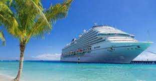

Our world-famous 90-Day Ticker is a complete listing of last-minute cruises on the world's best cruise lines. If you see a cruise there that interests you, don't delay! Average availability is less than seven days and many cruises sell out within hours of listing.
El precio de un crucero incluye muchos servicios y se adapta a su presupuesto. Para los más exigentes o para las familias, el concepto de crucero con todo incluido es una ventaja innegable para darse un capricho sin reparar en gastos.
Price
1,031 USD / person